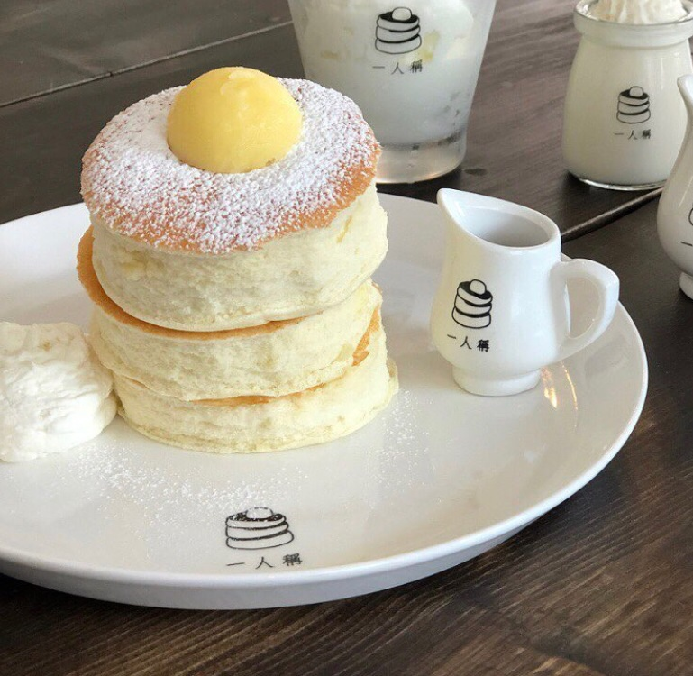

One may eat to keep living while some live in order to eat. Nur Izzaty does not belong to neither side, however food in general have a lot of variety itself. Get to know Nur Izzaty's favorite dish and comfort food.

Seaweed Soup is one of Nur Izzaty's comfort dish, where it is easy to prepare and also affordable for every college student to make on their own. In Korea, the people usually have seaweed soup on their birthday in order to respect and remember
their mother's love that they have to put up with eating only seaweed soup after bearing a child. Other than that, it it quite good to be eaten on rainy day.
Japanese Curry is a curry that is made by using a curry cube. Unlike the own in Malaysia, it taste distinctively unique. Nur Izzaty is not a fan
for spicy food, but she is willing to eat it again and again if she have the chance to do so. The texture of the curry is quite thick and often prepared with chicken fillet. It is a dish that Nur Izzaty would recommend when eating at Japanese Restaurant.

Fluffy Pancake is similar to ordinary pancake however, it is much fluffier and tastier. One can use lots of syrups or marjerine to eat with the pancake. Despite it being delicious and nice to see, the way of making it is quite troublesome. Nur Izzaty have been trying to make it on her own but there is no guarantee it will turn out good all the time.